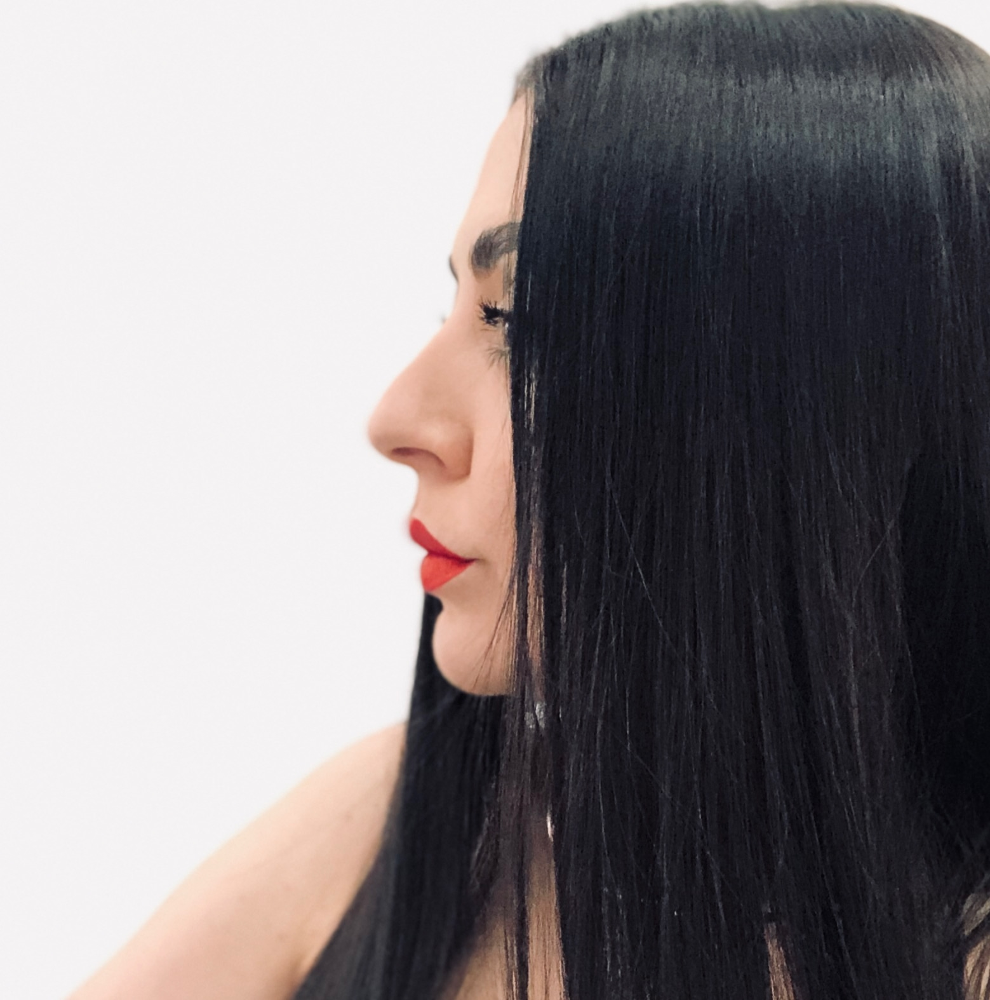
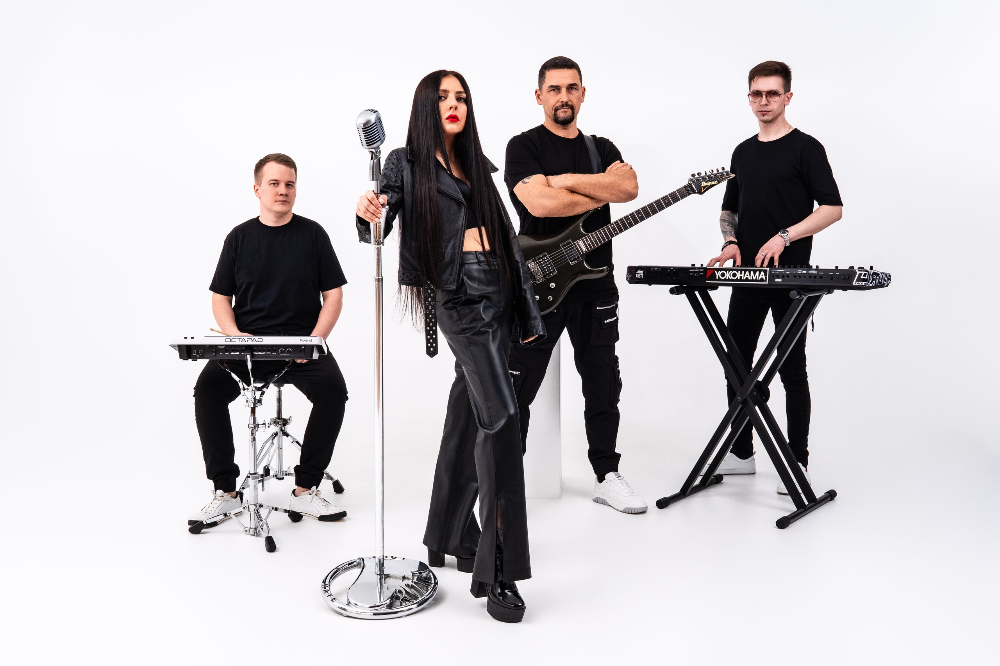

Я не учу пению. Я делюсь тем, как звучу сама.
Я пою каждую неделю. Я не учу из теории. Я делюсь тем, что использую сама. Каждый день. У меня свой бренд TONIRI, своя группа Tes'la, свои песни, свои концерты. И я преподаю не вместо сцены, а параллельно с ней.
Ты приходишь не к человеку, который рассказывает тебе как петь. Ты приходишь к артисту, который берёт тебя в свою практику.

Работа над голосом изнутри сценической практики.
ТОНИРИ — это не теория пения. Это живая лаборатория артиста, где ты учишься не «правильному звуку», а тому, как звучать собой. В основе метода — три слоя, которые я веду параллельно у каждого ученика:
Техника, дыхание, опора, диапазон, дикция, артикуляция. Здоровый, сильный, выносливый инструмент. Без зажимов, без перенапряжения, без поиска «правильного» звука.
Зажим — это всегда сигнал, не дефект. Я работаю с телесными зажимами как с отражением психосоматики: что голос говорит о том, чего ты ещё не разрешил себе. Это даёт свободу, которая не уходит после занятия.
Готовность к сцене, к масштабу, к контакту со зрителем. Артист сделан не из техники — из способности быть видимым. Я веду этот процесс шаг за шагом: от «боюсь записать себя на диктофон» до «выхожу на свою сцену».
Это пять самых частых историй, с которыми приходят ко мне. Если ваша — здесь, нам по пути.
«У меня есть голос, но он перестал расти. Я знаю, что могу больше, но не понимаю, как туда дойти».
Работаем с потолком: расширяем диапазон, снимаем зажимы, ставим сценическую подачу. Учимся звучать собой, а не «как все».
«Я пою, но боюсь сцены и людей. Зажимаюсь, не могу слушать свои записи».
Работаем с состоянием артиста. Шаг за шагом — от «петь дома» к «петь при людях» и дальше — к «петь со сцены».
«Я пишу свои песни, но не уверен в подаче. Не знаю, как их исполнять так, чтобы цепляло».
Работаем с авторской интерпретацией. С тем, чтобы твой голос соответствовал твоей музыке. С артистическим Я.
«Мне важно, чтобы меня слушали. Чтобы голос был сильным, уверенным, убедительным».
Работаем с речью, дикцией, дыханием, интонацией. С голосом как инструментом влияния.
«Я всю жизнь мечтал петь, но мне говорили — у тебя нет слуха, голоса, данных. Думал — поздно».
Не поздно никогда. Работаем с нуля. Бережно, без сравнений, без оценок. Раскрываем то, что у тебя уже есть.
Я работаю с артистами разного уровня и с разными запросами. Найди свой формат.
Длительное сопровождение действующего артиста. Работа над уникальностью, аутентичностью, проявленностью на сцене. Для тех, кто готов к серьёзному скачку.
Кому: действующим артистам, авторам-исполнителям
ПодробнееЛичная работа над голосом. Дыхание, опора, диапазон, дикция, репертуар. 60 или 90 минут. Офлайн во Владивостоке или онлайн.
ЗаписатьсяАвторский ретрит для женщин: голос, тело, восстановление, медитативные практики. Глубокая работа в кругу единомышленниц.
ПодробнееАвторские курсы по голосу, дикции, сценической подаче. Для тех, кто готов работать в своём темпе.
ПодробнееРабота в малом составе. Полезно для тех, кто учится через взаимодействие. И стоит мягче, чем индивидуально.
ЗаписатьсяЗдесь скоро появятся истории учеников и артистов, с которыми я работала. Их сотни, но каждая заслуживает отдельного места.
История ученика. Скоро здесь.
История ученика. Скоро здесь.
История ученика. Скоро здесь.
История ученика. Скоро здесь.
История ученика. Скоро здесь.
История ученика. Скоро здесь.
Хотите оставить свой отзыв? Напишите мне.

Если вам нужна живая группа на корпоратив, юбилей, свадьбу или городской праздник — у меня есть Tes'la. Мы выступаем во Владивостоке, в регионах Дальнего Востока и за их пределами.
Профессиональный состав. Свой звук. Авторские аранжировки и проверенные хиты.
30 минут, чтобы понять ваш запрос, рассказать о форматах и решить, подходим ли мы друг другу. Без обязательств.
Записаться на знакомство